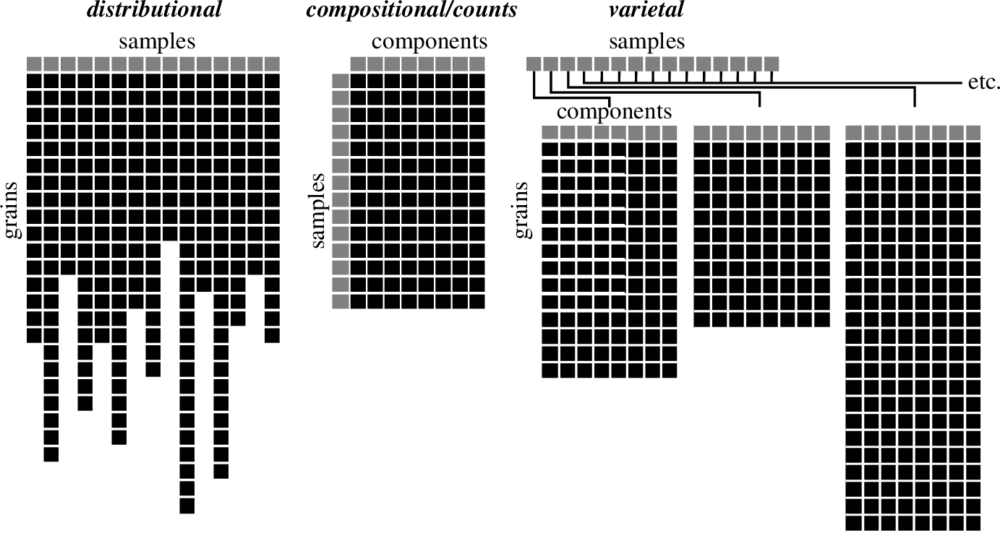
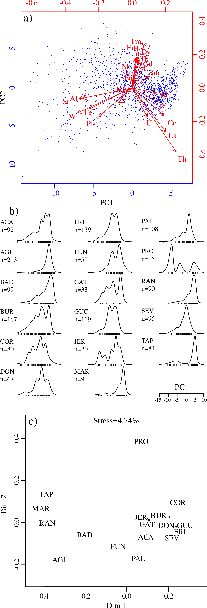
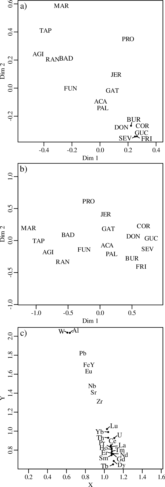
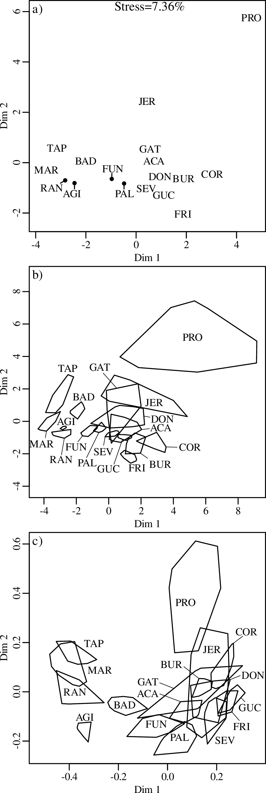
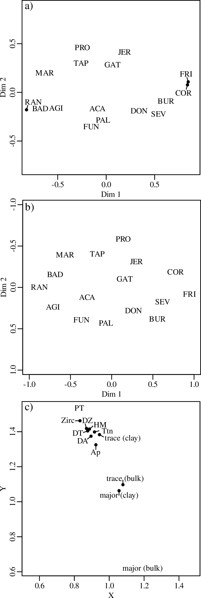

Multidimensional scaling of varietal data in sedimentary provenance analysis
P. Vermeesch1, A. G. Lipp2, D. Hatzenbühler3, L. Caracciolo3and D. Chew4
1University College London, United Kingdom
2Merton College, University of Oxford, United Kingdom
3FAU Erlangen-Nürnberg, Germany
4Trinity College Dublin, Ireland
Corresponding author: Pieter Vermeesch, p.vermeesch@ucl.ac.uk
Key Points:
Varietal data are defined as lists of compositional tables
Given an appropriate dissimilarity measure, varietal data can be subjected to multidimensional scaling
This paper introduces three ways to quantify the pairwise dissimilarity of varietal data
Abstract
Varietal studies of sedimentary provenance use the properties of individual minerals or mineral groups. These are recorded as lists of numerical tables that can be difficult to interpret. Multidimensional Scaling (MDS) is a popular multivariate ordination technique for analysing other types of provenance data based on, for example, detrital geochronology or petrography. Applying MDS to varietal data would allow them to be treated on an equal footing with those other provenance proxies. MDS requires a method to quantify the dissimilarity between two samples. This paper introduces three ways to do so. The first method (‘treatment-by-row’) turns lists of (compositional) data tables into lists of vectors, using principal component analysis. These lists of vectors can then be treated as ‘distributional’ data, and subjected to MDS analysis using dissimilarity measures such as the Kolmogorov-Smirnov statistic. The second method (‘treatment-by-column’) turns lists of compositional data tables into multiple lists of vectors, each representing a single component of the varietal data. These multiple distributional datasets are subsequently subjected to Procrustes analysis or 3-way MDS. The third method uses the Wasserstein-2 distance to jointly compare the rows and columns of varietal data. This arguably makes the best use of the data but acts more like a ‘black box’ than the other two methods. Applying the three methods to a detrital titanite dataset from Colombia yields similar results. After converting varietal data to dissimilarity matrices, they can be combined with other types of provenance data, again using Procrustes analysis or 3-way MDS.
Plain Language Summary
The source of modern or ancient sediment can be determined by examining either the overall characteristics of the sediment or the chemical composition of individual sediment particles. With the help of recent analytical advancements, geologists can now analyze the complete chemical makeup of single grains of sand or silt. These types of datasets, known as ’varietal’ datasets, have the ability to uncover differences between sediments that are not visible through traditional methods. However, varietal data are incompatible with the statistical methods that geologists typically use to determine the origin of the sediment. This paper addresses this issue by presenting three methods for quantifying the differences between varietal datasets, which is a crucial step in any further statistical analysis. Testing these methods on a varietal dataset from Colombia shows similar outcomes. By using the techniques described in this paper, varietal data can now be combined with other conventional methods for determining sediment origin.
Multidimensional Scaling MDS Kruskal and Wish (1978); Shepard (1980); Vermeesch (2013) is a multivariate ordination technique that has gained considerable popularity in recent years as a method to interpret large datasets in sedimentary provenance analysis (Vermeesch, 2013). Given a table of pairwise ‘dissimilarities’ between samples, MDS produces a lower (typically two-) dimensional ‘map’ in which samples plot close together and dissimilar samples plot far apart. MDS can be applied to a wide variety of different provenance proxies by choosing an appropriate dissimilarity measure. Vermeesch (2019) distinguishes between three different types of provenance data, each of which is associated with a specific database format (Figure 1):
Distributional data such as detrital zircon U-Pb ages can be stored in lists of decimal numbers, where each list represents a sample and typically contains a different number of values (i.e. single grain ages). Two samples can be compared using the Kolmogorov-Smirnov distance or related non-parametric statistics (Vermeesch, 2018a). The resulting dissimilarity matrix fulfils the metric requirements and is therefore suitable for both classical and nonmetric MDS (Vermeesch, 2013).
Compositional data such as the major and trace element compositions of bulk samples are stored in tables of decimal numbers, in which the rows represent samples and the columns represent components such as elements or isotopes. Pairwise comparison of the samples (rows) is best done using the Aitchison distance, which corresponds to a Euclidean distance of centred logratios (Aitchison, 1986). It can be shown that, in this case, (classical) MDS is mathematically equivalent to Principal Component Analysis PCA Aitchison (1983); Vermeesch (2013). The advantage of PCA over plain MDS is that it provides two sets of coordinates: one representing the rows and one representing the columns of the input data. This feature will be used in Section 3 of this paper.
Count data such as the petrography or heavy mineral composition of sediment are stored in tables of integers, in which rows correspond to samples, and columns to lithologies or minerals. Pairwise comparison of samples of count data can be done using the Chi-square distance, which can handle zero values, unlike the Aitchison distance (Vermeesch, 2018b). It can be shown that MDS of Chi-square distance tables is equivalent to Correspondence Analysis (Greenacre, 1984, CA,). Like PCA, CA also yields coordinates for the row and columns of the data tables, but these will not be discussed further here.
This paper adds a fourth class of data to this list:
Varietal data capture the variations in optical or chemical properties shown by an individual mineral or mineral group (Morton, 1985; Morton, 1991). This paper will focus on chemical properties, as measured by microanalytical techniques such as electron, laser or ion microprobe analysis. These data can be stored in lists of compositional data tables. Each table in a varietal dataset contains the same number of columns (representing elements or isotopes) and a different number of rows (representing individual analyses in a sample).
Unlike distributional, compositional and count data, varietal data have hitherto not been associated with a ‘natural’ dissimilarity measure. It is therefore not clear how varietal data can be analysed by MDS. This is unfortunate, because the complex structure of varietal data makes the need for multivariate ordination all the more pressing. This paper addresses this issue, by proposing three mechanisms to compare varietal data (Sections 2, 3 and ??). With these mechanisms in place, varietal data can be treated on an equal footing with other types of provenance data. Section 5 shows how varietal data can be combined with distributional, compositional and count data using 3-way MDS and Procrustes analysis.
The methods discussed in this paper are illustrated with a dataset from Colombia’s Sierra Nevada de Santa Marta (SNSM). This dataset comprises 17 samples of modern river sediment, characterised by 12 different provenance proxies, including three distributional datasets (detrital zircon, apatite and titanite U-Pb ages); four compositional datasets (major and trace element composition of the sand and clay fraction); two datasets of counts (petrography and heavy minerals); and three varietal datasets (trace element compositions of detrtial zircon, apatite and titanite). The geological details of the dataset are not relevant to the present discussion and are only briefly mentioned in this paper. The reader is referred to a separate paper for further details (Caracciolo et al., in review).
 Figure 1. Schematic representation of the four classes of provenance data. Grey boxes represent labels and black boxes numbers. distributional data can be stored as lists of vectors, compositional data as tables of positive decimal numbers, count data as tables of non-negative integers, and varietal data as lists of tables with positive decimal numbers.
As explained in Section 1, varietal data are, in essence, lists of compositional data tables. Compositional data can be compared using the Aitchison distance, and subjected to PCA. The dimension-reducing properties of PCA can be used to turn a varietal dataset into a distributional dataset:
Pool all the samples together to create one large compositional dataset, i.e. a single table in which each row represents an analysis, and each column represents an element or isotope.
Subject this data table to PCA. Return the first principal component, which accounts for the largest proportion of the overall variance, and discard the other principal components.
Parse the first principal component vector into different samples. This results in a list of vectors or, in other words, a distributional dataset. This can then be analysed by MDS with the usual Kolmogorov-Smirnov statistic.
Figure 2 applies the treatment-by-row strategy to the titanite chemistry data from the SNSM. Figure 2.a shows the first two principal components of the pooled titanite compositions on a biplot. Only the first of these components (PC1) is used for subsequent distributional analysis. It is dominated by Pb, Fe, W, Sr and Al, which are assocated with negative loadings (red arrows in Figure 2.a), and the light lanthanides (La, Ce, Pr, Nd) and actinides (U, Th), which are assocated with positive loadings. PC1 accounts for 51% of the total variance among the 25 components. This means that 49% of the variance is discarded, including the 19% that is associated with PC2. It is the necessary sacrifice that is needed to turn the varietal dataset into a distributional one.
The distributions of PC1 are shown as kernel density estimates (KDEs) in Figure 2.b. It is the shapes of these distributions that are used as a secondary provenance proxy. Inspecting the KDEs by eye shows some clear groupings. Samples TAP, MAR, RAN and AGI are all characterised by sharp unimodal PC1 distributions that are dominated by positive values, which suggest that these samples are enriched in rare earth elements relative to Pb, Fe, W and Al. In contrast, samples such as SEV, GUC, COR and FRI are characterised by broader PC1 distributions that are shifted towards more negative values. This suggests that these samples are enriched in Pb, Fe, W and Al relative to the rare earths, in comparison with samples SEV, GUC, COR and FRI.
A more objective comparison of the PC1 distributions is achieved by MDS analysis, using the KS-statistic (Figure 2.c). As expected, samples SEV, GUC, COR and FRI cluster closely together on the MDS map, opposite to samples MAR, TAP, AGI and RAN. This grouping makes geological sense, as SEV, GUC, COR and FRI were collected from river catchments that drain metamorphic lithologies (migmatite, gneiss, metadiorite), whereas samples MAR, TAP, AGI and RAN were collected from catchments that drain igneous lithologies (Caracciolo et al., in review).
 Figure 2. a) PCA biplot of the pooled titanite geochemistry data. The blue dots mark 1,571 titanite analyses, which belong to 17 samples. b) Kernel density estimates (bandwidth = 0.8) of the first principal component (PC1) of the 17 samples; c) Nonmetric MDS configuration of the 17 PC1 distributions, using the Komogorov-Smirnov statistic as a dissimilarity measure. MDS coordinates are located in the middle of the plot labels. The Kruskal Stress value suggests a ‘good’ fit.
3 Method 2: treatment by column
The treatment-by-row approach turns the varietal data into a single distributional dataset. An alternative approach is to turn it into multiple distributional datasets:
Break the compositional data table of each sample up into its components (columns), and treat each of these components as a distributional dataset. In other words, a varietal dataset comprising n samples and m components (e.g., elements), can be turned into m distributional datasets containing n samples (each in turn containing a variable number of analyses).
Compute the dissimilarity matrices of all the distributional datasets and stack them together to form a multidimensional array of size n × m × m.
Subject the stack of dissimilarity matrices to Procrustes analysis or 3-way MDS (Carroll & Chang, 1970; Gower, 1975; Vermeesch & Garzanti, 2015). For Procrustes analysis, this produces a similar set of coordinates as Method 1. For 3-way MDS, it produces two sets of coordinates: one for the rows (samples) and one of the columns (components). In this respect, 3-way MDS is somewhat similar to PCA.
Applying the treatment-by-column approach to the SNSM data, Figure 3.a shows the output of a Generalised Procrustes Analysis GPA Gower (1975). It uses affine transformations to obtain a single set of coordinates from the 25 compositional MDS configurations. The results in Figure 3.a look remarkably similar to the MDS configuration of Figure 2.c, despite the completely different mechanism behind it. In both case, samples SEV, GUC, COR and FRI cluster closely together, in an opposite corner from samples MAR, TAP, AGI and RAN. The only major difference between the MDS (Figure 2.c) and GPA (Figure 3.a) configurations is the 45 degree clockwise rotation of the latter with respect to the former. This is expected since GPA is rotation invariant.
One limitation of GPA is the fact that all compositional information is lost in the visualisation. This issue is addressed by 3-way MDS, as shown in Figures 3.b and c. Together, these two pieces of graphical output display both the row names and the column names of the varietal dataset. The ‘group configuration’ of the samples (Figure 3.b) is similar to the output of the GPA and (2-way) MDS configurations of Figures 2.c and 3.a: once again, samples SEV, GUC, COR and FRI plot separately from samples MAR, TAP, AGI and RAN. However, the 3-way MDS configuration (Figure 3.b) is less similar to the GPA configuration (Figure 3.a) than the GPA configuration is to the 2-way MDS analysis (Figure 2.c).
The great appeal of 3-way MDS lies in the combination of the group configuration with the source weights, which are shown in Figure 3.c. These weights show the relative importance that the two dimensions of the group configuration attach to the 25 compositional variables. Pb, Fe, W and Al plot at the upper left end of the subject weights. They are associated with light horizontal weights (x-coordinates of 0.7–0.8) and heavy vertical weights (y-coordinates of 1.7–2.0). The rare earth elements (except Eu) plot at the opposite end of the subject weights, and are associated with comparatively heavy horizontal weights (x-coordinates of 1.0–1.1) and light vertical weights (y-coordinates of 0.7–1.0). Note that the grouping of the elements is in good agreement with the loadings of the first principal component (Figure 2.a).
The weights tells us that the horizontal dimension (Dim 1) of the group configuration (Figure 3.b) is controlled by variability in the rare earth composition, whereas the vertical direction (Dim 2) is controlled by variability in the Pb, Fe, W and Al concentrations.
 Figure 3. a) Procrustes analysis of the 25 MDS configurations that are obtained by breaking the titanite chemistry data up into 25 distributional datasets; b) Group configuration of a 3-way MDS analysis of the 25 dissimilarity matrices extracted from the same titanite geochemistry dataset; c) Source weights of the 3-way MDS analysis, showing the stretching factors that are associated with each of the 25 components. These can be combined with the group configuration to yield 25 ‘private spaces’ (Arabie et al., 1987; Vermeesch & Garzanti, 2015). " class="math-display" >
where π is the ‘transport plan’, i.e. a probability distribution in which dπ(x,y) is the amount of material that is transported from location x to y; and c(x,y) is the ‘cost’ associated with this transport. Given two compositional tables (XA and XB, say) of size nA × m and nB × m, respectively the ‘cost matrix’ is obtained by computing the Aitchison distance between each row of table XA and each row of table XB. This results in a matrix of size nA × nB. The optimal transport plan is obtained from this cost matrix by linear programming (Villani, 2021), the principles of which go beyond the scope of this paper.
Computing the W2-distance to all sample pairs in a varietal dataset yields a square dissimilarity matrix that can be analysed by MDS. For the SNSM titanite dataset, this yields a configuration that looks broadly similar to the results obtained by methods 1 and 2 (Figure 4). Notable exceptions are samples PRO and JER, which are significantly further removed from the bulk of the dataset than they are in Figures 2.c, 3.a and 3.b. This behaviour is likely a consequence of the small number of analyses in these two samples (20 for JER and 15 for PRO, see Figure 2.b), as confirmed by the uncertainty regions of Figure 4.b, which correspond to the convex hull of 20 bootstrapped replicates for each sample. Repeating the same procedure for method 1 produces uncertainty regions that are, on average, larger than for method 3, but more uniform in size. This suggests that the ‘treatment-by-row’ approach is less precise than the Wasserstein approach, but also less ‘heteroscedastic’.
The advantage of method 3 over the other two methods is that it makes full use of the entire dataset, including any covariance structure that may be embedded therein. The disadvantage is that the compositional information is lost in the process of calculating the cost matrix. Therefore, method 3 acts more like a ‘black box’ than method 1 and certainly more than method 2.
 Figure 4. a) Nonmetric MDS configuration of the titanite data using the Wasserstein-2 distance (method 3). Although the Kruskal Stress value is higher than for Figure 2.a, this does not necessarily mean that the configuration is less informative than that of method 1. The higher stress values just means that it was more difficult for the MDS algorithm to fit the dissimilarity matrix to a 2-dimensional configuration of points. The fit still qualifies as ‘good’. b) Uncertainty regions of the MDS configuration, obtained by constructing the convex hull of 20 bootstrapped replicates of each sample. c) Bootstrapped uncertainty regions for the treatment-by-row results of Figure 2.c.
5 Combining varietal data with other provenance proxies
Section 3 showed how Procrustes analysis and 3-way MDS can be used to combine multiple dissimilarity matrices together, and extract a single configuration of samples from them. The same techniques can also be used to combine varietal data with other provenance proxies. In principle, this can be done using any of the three methods. However, in practice, methods 1 and 3 are the most sensible choices, for the following reason.
There are 12 provenance proxies in the SNSM dataset, including three varietal datasets, where the titanite, apatite and zircon compositions comprise 25, 22 and 8 compositional variables, respectively. Using methods 1 or 3, each varietal dataset yields its own dissimilarity matrix so that the entire multi-proxy dataset involves 12 dissimilarity matrices. In contrast, using method 2 would yield 14 + 25 + 22 + 8 = 69 dissimilarity matrices. This would cause several problems. First, fitting 69 matrices would be computationally difficult. Second, any 3-way MDS results would be difficult to interpret, as the map of source weights would be overcrowded. Third, model 2 would give excessive weight to the varietal data compared to the other provenance proxies, with the titanite compositions being represented 25 times.
Although both method 1 and 3 are viable ways to combine varietal data with other types of provenance data, method 3 is arguably the most sensible option. This is because its main disadvantage (namely the limited interpretability of the resulting MDS configurations) is nullified by the fact that the MDS configurations are not actually presented in the Procrustes map or the 3-way MDS configuration.
Figure 5.a presents the results of Procrustes analysis for the combined SNSM dataset, in which each dataset was subjected to method 3. It represents 12 multivariate datasets in a single scatterplot that shares many characteristics with the MDS plots of the titanite dataset alone. Once again, samples SEV, COR and FRI plot in close vicinity to each other, and separately from samples MAR, TAP, AGI and RAN. Note that sample GUC is missing from the Procrustes configuration. That is because this sample is missing from the dataset of major element concentrations in clay.
Although the Procrustes map effectively summarises the salient similarities and differences between the samples in the full SNSM dataset, it does not provide any clues as to what causes these differences. The output of the 3-way MDS analysis addresses this issue. Figure 5.b shows the group configuration. It fulfils a similar role to the Procrustes map of Figure 5.a and has a similar appearance. However, the clustering of the different samples is less distinct in the group configuration than it is in the Procrustes map.
Figure 5.c shows the source weights of the 12 provenance proxies. It shows that samples that are separated along the horizontal dimension (such as FRI and RAN) have different bulk compositions, and similar distributional and varietal characteristics. In contrast, samples that are separated along the vertical dimension have comparatively similar bulk compositions, but differ in their distributional and varietal provenance proxies. One possible interpretation of these trends is that the horizontal dimension is controlled by lithology, whereas the vertical dimension is controlled by the geological evolution of the source terrane(s).
 Figure 5. a) Procrustes analysis and b) group configuration of a 3-way MDS analysis of the 12 provenance proxies from the SNSM, using method 1; c) the source weights of the 3-way MDS analysis. DA, DT and DZ stand for U-Pb age distributions of detrital apatite, titanite and zircon, respectively; Ap, Ttn and Zirc for the varietal apatite, titanite and zircon data; PT and HM for petrography and heavy minerals; and major and trace for the chemical composition of the bulk sediment and clay fractions. Note that the vertical axis of panel b) has been flipped to facilitate comparison with panel a).
6 Implementation in provenance
All the algorithms described in this paper have been implemented in a free and open R package called provenance (Vermeesch et al., 2016). provenance comes with a query-based user interface that does not require any knowledge of R. The following paragraphs, however, will focus on the command line interface. Version 4.1 of the package adds a new varietal data class, which can be populated from a .csv input file using the read.varietal function:
library(provenance)
Ttn <- read.varietal(fname="Ttn_chem.csv",snames=3)
where Ttn_chem.csv is a compositional data table containing the concatenated compositions of all the samples. The column names of this table specify its components, whereas the row names consist of an alphanumeric prefix corresponding to the sample name, followed by a unique identifier for each analysis. The sname argument either specifies a vector of prefixes, or the length of the prefix. The output of the read.varietal function consists of a list containing the input table, a vector of sample names (in this case the prefixes extracted from the row names), the name of the dataset, and the dissimilarity measure (KS for Kolmogorov-Smirnov by default). The varietal data object can be passed on to several other functions of the provenance package. To subject the varietal data to (2-way) MDS using method 1 (treatment-by-row):
plot(MDS(Ttn,method="KS"))
where the output of the MDS function is nested as input in the overloaded plot function. To analyse the titanite chemistry data by method 2 (treatment-by-column), using Procrustes analysis:
plot(procrustes(Ttn))
and using 3-way MDS (Carroll & Chang, 1970, a.k.a. ‘Individual Differences Scaling’ or INDSCAL):
plot(indscal(Ttn))
Method 3 requires linear programming, which is currently delegated to either the transport or approxOT package (Schuhmacher et al., 2022; Dunipace, 2021). Using the former:
plot(MDS(Ttn,method="W2",package="transport"))
To combine multiple provenance proxies by Procrustes analysis, for example using titanite, apatite and zircon chemistry (using method 3); titanite, apatite and zircon U-Pb ages; heavy minerals and petrography; and the major and trace element compositions of the bulk sediment and clay fractions:
Ttn <- read.varietal(fname="Ttn_chem.csv",snames=3,method="KS")
Ap <- read.varietal(fname="Ap_chem.csv",snames=3,method="KS")
Zr <- read.varietal(fname="Zr_chem.csv",snames=3,method="KS")
DA <- read.distributional("DA.csv")
DT <- read.distributional("DT.csv")
DZ <- read.distributional("DZ.csv")
HM <- read.counts("HM.csv")
PT <- read.counts("PT.csv")
major_bulk <- read.compositional("Major_BULK.csv")
major_clay <- read.compositional("Major_CLAY.csv")
trace_bulk <- read.compositional("Trace_BULK.csv")
trace_clay <- read.compositional("Trace_CLAY.csv")
proc <- procrustes(Ttn,Ap,Zr,DA,DT,DZ,HM,PT,
major_bulk,major_clay,trace_bulk,trace_clay)
plot(proc)
Note that the dissimilarity measure (i.e., W2) is added to the data by the read.varietal function, unlike the earlier example, which used the default KS method. Analysing the same holistic dataset by 3-way MDS:
plot(indscal(Ttn,Ap,Zr,DA,DT,DZ,HM,PT,
major_bulk,major_clay,trace_bulk,trace_clay))
This paper introduced three different approaches to quantify the dissimilarity between different samples in varietal datasets. These approaches can be used to populate dissimilarity matrices, which can be analysed by MDS.
Methods 1, 2 and 3 produce reassuringly similar results for the titanite chemistry data of the SNSM. This suggests that even though the three methods each consider different parts of the dataset, they all retain the key inter-sample similarities and differences. Comparable results are obtained for the other provenance proxies, which confirms that varietal data do carry a robust and reproducible provenance signature. The consistency of the results obtained from a single dataset with the combined dataset of all the provenance proxies further lends credence to the conclusions drawn from the multivariate ordination analyses.
In principle, method 3 is the most powerful of the three approaches, because it directly converts varietal data to dissimilarity matrices and jointly considers all the compositional information that is stored in the varietal data. In contrast, methods 1 and 2 require the conversion of the varietal data to distributional data. Some information is lost in this additional step. For method 1, only the information contained in the first principal component is retained. For method 2, the connection between the various columns of the compositional data members of the varietal data structure is lost, including any constant sum constraint.
Despite these limitations, methods 1 and 2 also offer some advantages over method 3. Whereas the connection between the MDS configuration and the compositional data variables is lost in the process of calculating the Wasserstein-2 distance, this connection is partially retained in method 1, and nearly completely in method 2. Thus, the results of methods 1 and 2 are easier to verify and interpret than those of method 3.
For example, in the case of the titanite chemistry data from the SNSM, samples MAR and COR plot on opposite sides of the MDS configuration (Figure 4), and it is not immediately clear which compositional variables cause these differences. However, inspection of PC1 in method 1 (Figure 2.a) or, more directly, the subject weights in method 2 (Figure 3.c) reveals that these trends reflect differences in the W-Al-Pb-Fe vs. actinides and light rare earth abundances.
At first glance, the Procrustes analysis (Figure 3.a) does not seem to offer any advantage over 3-way MDS. However, it is useful to repeat the caveat that was previously raised by Borg and Groenen (2005), which is that the source weights of a 3-way MDS analysis are sensitive to noise and are not as stable as the user might wish. Thus it is important not to over-interpret the results of 3-way MDS.
Inspection of Figures 4.b and c also suggests that the W2 distance is more sensitive to small sample fluctuations than the KS-distance. This is clearest for samples PRO and JER, which contain only 15 and 20 titanite analyses, respectively. Although the W2 results are, on average, more precise than the corresponding KS results, the difference in precision between small and large samples is greater for the W2-distance than the KS-distance. This explains the distant location of PRO and JER on the MDS configuration of Figure 4.a.
The limitations of method-3 become less important when it is used to combine varietal data with other provenance proxies (Section 5). The full SNSM dataset contains no fewer than 126,408 measurements, spanning 12 dimensions worth of information. It is impossible to capture the full richness of datasets like this in a few simple scatterplots such as Figure 5. However, the internal consistency of the SNSM results, and their sensible geological interpretation, suggest that the approaches described in this paper are capable of separating geologically meaningful signals from noise. Further applications will be needed to confirm if this applies in other geological settings as well.
Open Research Section
All the data and software introduced in this paper is publicly available on the Comprehensive R Archive Network (CRAN, https://CRAN.R-project.org/package=provenance) and on GitHub ( https://github.com/pvermees/provenance/, doi:10.5281/zenodo.7633857). The raw data files can be found at https://github.com/pvermees/provenance/tree/master/inst/SNSM/
Acknowledgments
This work was supported by NERC Standard Grant #NE/T001518/1, awarded to PV, and by project CA 2099/2-1 of the Deutsche Forschungsgemeinschaft (DFG), awarded to LC. AGL is funded by a Junior Research Fellowship from Merton College, Oxford. DC is supported in part by a research grant from Science Foundation Ireland (SFI) under Grant Number 13/RC/2092_P2 (iCRAG, the SFI Research Centre in Applied Geosciences). We would like to thank Glenn R. Sharman and an anonymous reviewer for positive and constructive feedback.
Aitchison, J. (1983). Principal component analysis of compositional data. Biometrika, 70(1), 57-65. doi: 10.1093/biomet/70.1.57 Aitchison, J. (1986). The statistical analysis of compositional data. London, Chapman and Hall. Arabie, P., Carroll, J. D., & DeSarbo, W. S. (1987). Three way scaling: A guide to multidimensional scaling and clustering (Vol. 65). Sage. Borg, I., & Groenen, P. J. (2005). Modern multidimensional scaling: Theory and applications. Springer. Caracciolo, L., Hatzenbühler, D., Chew, D., Weltje, G. J., Vermeesch, P., Piraquive, A., … Villanueva, N. (in review). What do we measure in provenance analysis? a controversial case study on sediment generation in the sierra nevada de santa marta (colombia). Geological Society of Americal Bulletin. Carroll, J. D., & Chang, J.-J. (1970). Analysis of individual differences in multidimensional scaling via an N-way generalization of ‘Eckart-Young’ decomposition. Psychometrika, 35(3), 283–319. Dunipace, E. A. (2021). approxOT: approximate optimal transport [Computer software manual]. Retrieved from https://github.com/ericdunipace/approxOT (R package version 0.1) Gower, J. C. (1975). Generalized procrustes analysis. Psychometrika, 40(1), 33–51. Greenacre, M. J. (1984). Theory and applications of correspondence analysis. Academic Press. Kruskal, J. B., & Wish, M. (1978). Multidimensional scaling (Vol. 07-011). Sage Publications, Beverly Hills and London. Lipp, A. G., & Vermeesch, P. (2022). Comparing detrital age spectra, and other geological distributions, using the Wasserstein distance. Earth and Planetary Science Letters. doi: 10.31223/X5TM02 Morton, A. C. (1985). Heavy minerals in provenance studies. In Provenance of arenites (pp. 249–277). Springer. Morton, A. C. (1991). Geochemical studies of detrital heavy minerals and their application to provenance research. In A. Morton, S. Todd, & P. D. W. Haughton (Eds.), Developments in Sedimentary Provenance Studies (Vol. 57, pp. 31–45). Geological Society of London. Schuhmacher, D., Bähre, B., Gottschlich, C., Hartmann, V., Heinemann, F., & Schmitzer, B. (2022). transport: Computation of optimal transport plans and wasserstein distances [Computer software manual]. Retrieved from https://cran.r-project.org/package=transport (R package version 0.12-4) Shepard, R. N. (1980). Multidimensional scaling, tree-fitting, and clustering. Science, 210(4468), 390–398. Vermeesch, P. (2013). Multi-sample comparison of detrital age distributions. Chemical Geology, 341, 140–146. Vermeesch, P. (2018a). Dissimilarity measures in detrital geochronology. Earth-Science Reviews, 178, 310-321. doi: 10.1016/j.earscirev.2017.11.027 Vermeesch, P. (2018b). Statistical models for point-counting data. Earth and Planetary Science Letters, 501, 1–7. Vermeesch, P. (2019). Exploratory Analysis of Provenance Data Using R and the Provenance Package. Minerals, 9(3), 193. Vermeesch, P., & Garzanti, E. (2015). Making geological sense of ‘Big Data’ in sedimentary provenance analysis. Chemical Geology, 409, 20–27. Vermeesch, P., Resentini, A., & Garzanti, E. (2016). An R package for statistical provenance analysis. Sedimentary Geology. Villani, C. (2021). Topics in optimal transportation (Vol. 58). American Mathematical Soc.